방송통신기사 (2016-03-05 기출문제)
1과목: 디지털 전자회로
1. 다음 중 교류입력의 반주기에 대해 브리지 정류기의 다이오드 동작조건에 대한 설명으로 옳은 것은?
- 한 개의 다이오드가 순방향 바이어스이다.
- 두 개의 다이오드가 순방향 바이어스이다.
- 모든 다이오드가 순방향 바이어스이다.
- 모든 다이오드가 역방향 바이어스이다.
(정답률: 68%)

2. 다음 정류회로의 명칭은?
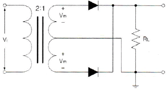
- 단상반파 정류회로
- 3상반파 정류회로
- 단상전파 정류회로
- 브릿지전파 정류회로
(정답률: 57%)
3. 다음 정전압회로에서 제너 다이오드의 내부저항(rd)는 2[Ω]이고, 입력 직렬저항 (Rs)는 500[Ω]일 경우 전압 안정계수(S)는 약 얼마인가?
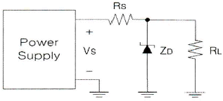
- 0.004
- 0.0⑤
- 0.006
- 0.007
(정답률: 53%)
4. 다음 중 트랜지스터(Transistor)를 달링턴 접속하였을 경우에 대한 설명으로 틀린 것은?
- 전류이득이 높아진다.
- 입력임피던스가 낮아진다.
- 전압이득은 1보다 작다.
- 출력임피던스가 낮아진다.
(정답률: 44%)
5. 다음 중 베이스 접지 증폭기에 대한 설명으로 틀린 것은?
- 다른 접지증폭 방식에 비해 전압이득을 크게 할 수 있다.
- 출력임피던스가 다른 접지증폭 방식에 비해 높다.
- 전류이득은 대략 1이다.
- 입력과 출력간의 위상은 반전이다.
(정답률: 56%)
6. 다음 중 부궤환 증폭기의 장점이 아닌 것은?
- 주파수 특성이 개선된다.
- 부하변동에 의한 이득 변동의 감소로 동작이 안정된다.
- 일그러짐이 감소한다.
- 전력효율이 좋아진다.
(정답률: 50%)
7. 다음 그림에서 입력전압 Vi는? (단, R1=2R2)
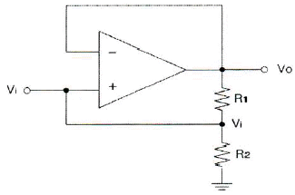
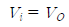
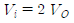
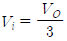
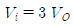
(정답률: 63%)
8. 다음 중 발진을 유지하기 위한 조건이 아닌 것은?
- 증폭기의 출력이 유지되는 방향으로 궤환이 일어나야 한다.
- 궤환루프의 위상천이가 0˚이어야 한다.
- 전체 폐루프의 전압이득이 (Ad)이 0이어야 한다.
- 발진의 안정조건은 |Aβ|=1이어야 한다. (A: 증폭기 증폭도, β: 궤환율)
(정답률: 49%)
9. 다음 중 정현파 발진기의 종류가 아닌 것은?
- CR 발진기
- LC 발진기
- 수정발진기
- 멀티바이브레이터
(정답률: 63%)
10. 다음 중 슈퍼헤테로다인(Superheterodyne) 검파방식의 주파수 성분을 구하는 방법으로 틀린 것은?
- 영상주파수 = 수신주파수 + (2×중간주파수)
- 국부발진주파수 = 수신주파수 - 중간주파수
- 혼신주파수 = 영상주파수 - 국부발진주파수
- 중간주파수 = 국부발진주파수 + 영상주파수
(정답률: 58%)
11. 다음 중 주파수변조를 진폭변조와 비교한 설명으로 틀린 것은?
- 점유주파수대폭이 넓다.
- 초단파대의 통신에 적합하다.
- S/N비가 좋아진다.
- Echo의 영향이 많아진다.
(정답률: 65%)
12. 일정시간 동안 200개의 비트가 전송되고, 전송된 비트 중 15개의 비트에 오류가 발생하면 비트 에러율(BER)은?
- 7.5[%]
- 15[%]
- 30[%]
- 40.5[%]
(정답률: 75%)
13. 다음 중 입력 신호에서 어떤 특정된 제어 시간의 신호만 출력되도록 할 목적으로 사용하는 회로는?
- 슬라이싱(Slicing) 회로
- 클램퍼(Clamper) 회로
- 클리핑(Clipping) 회로
- 게이트(Gate) 회로
(정답률: 55%)
14. 다음 중 멀티바이브레이터의 동작과 관계가 없는 것은?
- 전원전압이 변동해도 발진주파수에는 변화가 없다.
- 출력에 고차의 고조파를 포함한다.
- 회로의 시정수로 출력파형의 주기가 결정된다.
- 부궤환으로 이루어진 회로이다.
(정답률: 45%)
15. 8진수 (67)8을 16진수로 바르게 표기한 것은?
- (43)16
- (37)16
- (55)16
- (34)16
(정답률: 71%)
16. 다음 논리 회로는 어떤 논리 게이트(Logic Gate)로 동작하는가?
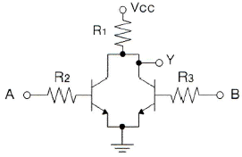
- OR
- NOR
- NAND
- AND
(정답률: 48%)
17. 논리식 A(A+B+C)를 간단히 하면?
- A
- 1
- 0
- A+B+C
(정답률: 65%)
18. 5비트 2진 카운터의 입력에 4[MHz]의 정방향 펄스가 가해질 때 출력 펄스의 주파수는?
- 25[kHz]
- 50[kHz]
- 250[kHz]
- 125[kHz]
(정답률: 52%)
19. 비동기식 5진 카운터(Counter) 회로는 최소 몇 개의 플립플롭(Flip-Flop)이 필요한가?
- 4
- 3
- 2
- 1
(정답률: 55%)
20. 다음 그림과 같은 회로의 명칭은?
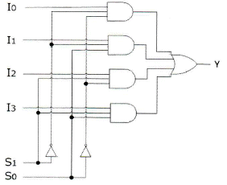
- 병렬가산기
- 멀티플렉서
- 디멀티플렉서
- 디코더
(정답률: 71%)
2과목: 방송통신 기기
21. 다음 중 방송법에서 정의하는 방송에 해당되지 않는 것은?
- 텔레비전 방송
- 인터넷 방송
- 라디오 방송
- 이동 멀티미디어 방송
(정답률: 60%)
22. 다음 중 AM 송신기의 주요 부분이 아닌 것은?
- 검파
- 발진
- 완충증폭
- 변조
(정답률: 57%)
23. 다음 중 방송프로그램의 제작을 지휘하는 장소로 영상, 음성, 조명 등을 조정하는 곳은?
- 스튜디오
- 주조정실
- 부조정실
- 텔레시네실
(정답률: 76%)
24. 다음 중 야외 음악회와 같이 열린공간에서의 야간 중계시 최상의 영상 제작을 위한 유의사항으로 틀린 것은?
- Jimmy-Jib 카메라나 스테디캄으로 이용하는 EFP카메라는 와이드 렌즈를 사용하기 때문에 녹화 전에 Full-Focus를 조정해야 한다.
- 무대와 객석의 밝기 기준은 가능한 객석이 무대보다 밝지 않도록 카메라 아이리스(Iris)를 조정한다.
- 넓은 야외에서는 조명이 부족하므로 카메라 렌즈배율 사용을 자주하여 영상의 해상도를 높이도록 한다.
- 인물 샷을 중심으로 하는 카메라는 인물 색조와 밝기를 스코프와 모니터로 확인하여 수시로 적절하게 조정한다.
(정답률: 80%)
25. 다음 중 주파수 변조와 비교하였을 때 진폭 변조의 특징으로 적절하지 않은 것은?
- 피변조파가 점유하는 주파수 대역이 좁다.
- 변복조 회로 설계가 비교적 간단하다.
- 신호 대 잡음비(S/N)가 개선된다.
- 주파수 이용률이 좋다.
(정답률: 54%)
26. 다음 중 디지털 오디오 국제표준 규격이 아닌 것은?
- AES/EBU
- SPDIF
- SMPTE-259M(SDI)
- KS
(정답률: 70%)
27. 2,400[bps]의 디지털 신호를 전송시 한 번에 3[bit]의 신호를 전송할 경우 이는 몇 [baud]에 해당되는가?
- 200[baud]
- 800[buad]
- 6,400[baud]
- 7,200[baud]
(정답률: 74%)
28. 다음 중 디지털TV 방송기술의 일반적인 특성이 아닌 것은?
- 아날로그 신호에 비해 잡음에 강하고 송신전력이 낮다.
- 영상 및 음향신호의 압축이 가능하다.
- 정보의 검색, 가공 및 편집이 용이하다.
- 에러(Error) 정정 기술을 사용할 수 없으며 전송에 따른 열화가 크다.
(정답률: 78%)
29. 다음 중 비디오 스위처에서 인물 화상 등을 다른 화상에 끼워넣어 화면을 합성하는 이펙트는?
- 크로마 키(Chroma Key)
- 와이프(Wipe)
- 루미넌스 키(Luminance Key)
- 리니어 키(Linear Key)
(정답률: 77%)
30. 다음 중 방송프로그램을 링크하는 STL(Studio Transmitter Link)에 있어서 디지털 마이크로웨이브 구성의 설명으로 틀린 것은?
- 디지털 입출력은 DVB-ASI 또는 DS3 전송형태이다.
- 디지털방송이므로 아날로그신호의 전송은 반드시 유선망을 통해서만 전송할 수 있다.
- 링크 송신의 변조방식은 16/32/64 QAM, QPSK 등을 사용한다.
- 전송신호의 형태에 따라 HD/SD Encoder, Decoder를 장착하여 전송할 수 있다.
(정답률: 83%)
31. 다음 중 위성 방송용 파라볼라 안테나에서 수신 전파의 주파수대는 12[GHz], 안테나의 직경은 1[m], 안테나의 개구효율이 0.64라고 할 때 이득은 약 몇 [dB]인가?
- 20[dB]
- 30[dB]
- 40[dB]
- 50[dB]
(정답률: 60%)
32. 다음 중 위성의 궤도에 따른 분류 방법이 아닌 것은?
- 중궤도 위성
- 고궤도 위성
- 저궤도 위성
- 자유궤도 위성
(정답률: 82%)
33. 다음 중 CATV 전송매체에 대한 설명으로 옳지 않은 것은?
- 사용 주파수 대역에 제한이 없는 것은 마이크로웨이브이며 가장 낮은 것은 동축케이블이다.
- 시설비용 측면에서 비용이 가장 낮은 것은 마이크로웨이브 전송방식이며 가장 높은 것은 광섬유 케이블이다.
- 보안성이 가장 양호한 것은 광섬유 케이블이며 가장 낮은 것은 마이크로웨이브이다.
- 누화가 없고 극히 광대역 전송이 가능한 것은 광섬유 케이블이다.
(정답률: 72%)
34. 다음 중 인터넷 방송의 서비스품질(QoS)를 얻기 위한 지표로 맞지 않는 것은?
- 변조
- 지연 시간 또는 지연
- 지터
- 트래픽 또는 패킷 손실
(정답률: 66%)
35. 다음 중 인터넷방송을 구축하기 위한 장비별로 구성이 잘못된 것은?
- 영상입력장비 : 디지털 카메라, 디지털 편집장비, 인코딩 스테이션 등
- 음향입력장비 : 마이크, 녹음기, 오디오 Mixer 등
- 정보저장장비 : Digital Video Recorder, VOD Server, Switching Hub System 등
- 네트워크장비 : 내부 인트라넷 구축, 인터넷 전용선, LAN Cable 등
(정답률: 74%)
36. 다음 중 국내 지상파 DMB의 사용 주파수대는?
- 204[MHz]~216[MHz]
- 204[MHz]~210[MHz]
- 174[MHz]~210[MHz]
- 174[MHz]~216[MHz]
(정답률: 69%)
37. 다음 중 TV신호 파형을 감시ㆍ측정하는데 가장 적합한 것은?
- 텔레시네(Telecine) 장치
- 파형 모니터(Waveform Monitor)
- 마스터 모니터(Mater Monitor)
- 컬러 인코더(Color Encoder)
(정답률: 81%)
38. 화면의 밝기가 변화할 때 색상이 변동하는 현상으로 특히 화면의 고휘도 부분에서 색이 적절치 않게 재생되는 현상은 다음 중 어떤 특성 때문인가?
- 휘도 비직선
- 색도 비직선
- 전압이득
- 미분위상
(정답률: 57%)
39. 다음 중 오실로스코프 상에서 입력된 신호를 정확하게 측정하기 위해 필요한 유의사항으로 틀린 것은?
- 주파수가 낮은 퍼스를 오실로스코프에 입력할 때 저주파 왜곡을 방지하기 위해서는 펄스폭과 공간폭이 오실로스코프 시정수의 1/10보다 크지 않아야 한다.
- 입력펄스 신호의 상승시간이 너무 짧아 관측이 어려운 경우는 펄스폭이 오실로스코프 상승시간보다 10배 이상 길어야 한다.
- 지연 시간축 오실로스코프는 수평편향회로 대신 시간축회로에 가변시간지연을 도입하여 스위프 Time을 트리거하도록 한다.
- 디지털 스토리지 오실로스코프는 최적의 재생을 위해 Nyquist Rate를 적용하여 사이클당 25Sampling 이상을 한다.
(정답률: 57%)
40. 송신점에서 10[km] 떨어진 점에서의 전계강도가 50[mV/m]일 때, 40[km] 떨어진 지점의 전계강도는?
- 10[mV/m]
- 12.5[mV/m]
- 15[mV/m]
- 17.5[mV/m]
(정답률: 62%)
3과목: 방송미디어 공학
41. 다음 중 국내 FM방송의 주파수대역은 얼마인가?
- 75[MHz]~99[MHz]
- 88[MHz]~100[MHz]
- 88[MHz]~108[MHz]
- 90[MHz]~110[MHz]
(정답률: 82%)
42. 다음 중 방송 수단에 의한 분류가 아닌 것은?
- 라디오방송
- TV방송
- 팩시밀리방송
- 중파방송
(정답률: 65%)
43. 다음 중 방송편성의 정의로 가장 타당한 것은?
- 방송의 공적인 발표문
- 마이크로폰을 통해 들어오는 음향의 동시접속
- 기계적, 기술적 소산으로 정신적 창조활동
- 방송 사항의 종류, 내용, 분량 및 그 결정행위
(정답률: 79%)
44. 중파방송의 주파수의 범위는 526.5~1,606.5[kHz]이다. 이 중파방송 대역폭에서 전송할 수 있는 최대 사용 채널수는 이론적으로 몇 개인가?
- 120개
- 130개
- 100개
- 150개
(정답률: 76%)
45. 아날로그신호를 디지털 형태의 PCM 신호로 변화시키기 위해서는 세 가지 기본 과정이 필요하다. 다음 중 PCM 과정으로 옳은 것은?
- 표본화(Sampling)과정 → 양자화(Quantization)과정 → 부호화(Coding)과정
- 부호화(Coding)과정 → 표본화(Sampling)과정 → 양자화(Quantization)과정
- 표본화(Sampling)과정 → 부호화(Coding)과정 → 양자화(Quantization)과정
- 양자화(Quantization)과정 → 표본화(Sampling)과정 → 부호화(Coding)과정
(정답률: 80%)
46. 다음 중 콘솔의 주요 모듈에 대한 설명으로 틀린 것은?
- 입력 모듈은 소리의 사용규모에 따라 모노와 스테레오형이 있다.
- 이퀄라이저 모듈은 2밴드 처리기를 말한다.
- 필터 모듈은 원래의 소리를 변형시키는 일종의 음향효과 장치라고 볼 수 있다.
- 잡음제거 모듈은 필요한 소리의 폭과 높이를 안정시켜서 잡음 또는 잡음과 같은 효과들을 감소시키는 장치이다.
(정답률: 62%)
47. 인간의 귀가 얼굴 양쪽에 있어서 음이 두 귀에 도달할 때까지 거리 차이가 발생하고 이러한 거리 차이는 음원과 두 귀에 대해서 시간차와 위상차를 발생시키기 때문에 음원의 방향을 정확하게 판단할 수 있는 음향 효과를 무엇이라고 하는가?
- Binaural Effect
- Cocktail Party Effect
- Masking Effect
- Hass Effect
(정답률: 68%)
48. 다음 중 Nyquist Filter에 대한 설명으로 틀린 것은?
- 대역이 제한된 주파수영역에서 심벌간 간섭이 발생하지 않는 이상적인 시간영역 파형은 Sinc펄스 형태이다.
- Nyquist필터는 점유대역폭이 가장 좁고(주파수 효율은 좋으나), 시간영역에서 구현이 가능하다.
- 실제 통신시스템에서는 Raised Cosine Filte를 사용하여 r(roll-off factor)값을 조정하여 사용한다.
- r=0인 경우가 Nyquist Filter이며, r값이 커지면 시간영역에서 구현이 용이하나 주파수 효율이 떨어진다.
(정답률: 69%)
49. 다음 중 정상적인 컴포지트 비디오 신호(Composite Video Signal)를 표현한 것으로 바르지 않는 것은?
- Full : 140 IRE
- Video : 100 IRE
- Sync : 30 IRE
- Burst : 40 IRE
(정답률: 66%)
50. 다음 중 인물의 윤곽을 선명하게 하고, 머리카락에 광택을 주며 배경에서 인물이 떠오르게 하는 조명은?
- 키라이트
- 베이스라이트
- 백라이트
- 필라이트
(정답률: 64%)
51. 다음 중 주파수에 의한 방송의 분류에서 파장이 가장 짧은 것은 무엇인가?
- VHF 방송
- UFH 방송
- HF 방송
- MF 방송
(정답률: 68%)
52. 다음 저장 미디어 중 저장 매체의 형태가 다른 하나는?
- CD-R
- DVD
- Blu-ray
- DAT
(정답률: 83%)
53. 다음 중 3차원 애니메이션에서 전체적인 동작이 완성된 다음 등장인물이나 물체의 표면에 섬세한 질감을 표현하기 위한 작업은 무엇인가?
- 키 프레임
- 렌더링
- 트위닝
- 트위닝 쉐이프
(정답률: 79%)
54. 다음 중 효율적인 압축방법 선택 시 고려사항이 아닌 것은?
- 압축률 및 표준화
- 압축 및 복원시간
- 압축 알고리즘의 복잡도
- 코덱 개발 시기
(정답률: 80%)
55. 다음의 문자열을 무손실 압축했을 경우 가능한 압축율은 얼마인가?
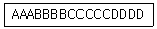
- 1/2
- 1/3
- 1/4
- 1/5
(정답률: 79%)
56. 다음 중 3DTV의 원리와 방식에 대한 설명으로 틀린 것은?
- 장시간 시청에 따른 피로감이 생길 수 있다.
- Streoscopic은 양안 시차를 이용하여 좌영상과 우영상을 뇌가 합성하여 입체느낌을 주는 원리이다.
- 3DTV를 위한 디스플레이 장치는 안경방식에서 무안경방식으로 소형인치에서 대형인치로 진화한다.
- 편광안경방식과 셔터안경방식은 모두 공간 분할 방식을 사용한다.
(정답률: 73%)
57. 다음 중 홀로그래피에 대한 설명으로 틀린 것은?
- 지각원리(Preception)에 근거하지 않고 물리적인 법칙에 근거한 어지러움이 없는 시청 환경의 3D표현장치이다.
- 시점의 제한없이 실제로 사람이 보고 느끼는 영상과 유사한 정보를 제공한다.
- 기존 영상기술을 획기적으로 대체할 수 있는 기술이다.
- 전반사 기술을 이용하여 좌우의 눈에 서로 다른 영상을 투영하는 기술이다.
(정답률: 82%)
58. 양자화기의 비트수(N)가 증가할 때마다 부호화에 따르는 양자화 오차는 몇 [dB]씩 감소되는가?
- 2[dB]
- 3[dB]
- 4[dB]
- 6[dB]
(정답률: 68%)
59. 다음 중 직교 변환 부호화 방식이 사용되지 않는 변환은 무엇인가?
- FFT
- DCT
- Hadamard 변환
- Hilbert 변환
(정답률: 56%)
60. 다음 중 MPEG 특징에 대한 설명으로 옳지 않은 것은?
- MPEG은 GOP(Group Of Picture)라고 하는 단위로 프레임들을 묶어서 압축한다.
- I프레임은 자체 프레임만 갖고 시간적 압축을 수행한다.
- P프레임은 이전의 I 또는 P프레임 하나를 기준으로 압축하며 압축 효율이 좋다.
- B프레임은 이전의 I 또는 P프레임 양쪽 모두 이용하여 압축하며 비트가 제일 적다.
(정답률: 60%)
4과목: 방송통신 시스템
61. 표본화에 의하여 얻어진 PAM 신호를 디지털화하기 위하여 진폭축으로 이산값을 갖도록 처리하는 것을 무엇이라고 하는가?
- 부호화
- 양자화
- 이진화
- 디지털화
(정답률: 78%)
62. 다음 중 전송 선로의 실효저항 증가로 전송손실을 가져오는 요인으로 옳지 않은 것은?
- 특성 임피던스
- 표피효과
- 근접작용
- 유전체(와류)손실
(정답률: 54%)
63. 10[kHz] 대역에서 16QAM 변조방식을 사용하여 전송할 수 있는 데이터의 최대 전송속도는?
- 10[kbps]
- 20[kbps]
- 40[kbps]
- 80[kbps]
(정답률: 77%)
64. 다음 중 단파방송에 관한 설명으로 틀린 것은?
- 양측파대 진폭변조나 단측파대 진폭변조를 사용한다.
- E층, F층 등의 전리층 반사에 의해 원거리까지 퍼지는 특성을 가진다.
- 국제방송에서는 단파전용으로 6~30[MHz]를 사용한다.
- SSB방식보다 수신기가 DSB방식보다 우수하고, 수신기교체 비용도 저렴하다.
(정답률: 75%)
65. 다음 중 디지털 멀티미디어를 위한 디지털 라디오 방송시스템의 국제 표준과 거리가 먼 것은?
- ITU-R US.1114
- MPEG-7
- ARIB STD B.29
- ETSI 300 401
(정답률: 70%)
66. 다음 중 디지털라디오 방송의 특징이 아닌 것은?
- 이동체 수신품질이 우수하다.
- CD음질의 오디오 서비스뿐만 아니라 다양한 멀티미디어 서비스 제공이 가능하다.
- 전력사용 효율이 낮다.
- 주파수사용 효율이 높다.
(정답률: 63%)
67. 다음 중 디지털TV 기술의 특징이 아닌 것은?
- 아날로그 신호에 비해 잡음에 약하다.
- 오류정정 기술을 사용할 수 있다.
- 전송, 복제, 축적에 따른 열화가 적다.
- 영상 및 음성신호의 대폭적인 대역압축이 가능하다.
(정답률: 77%)
68. 다음 중 TV 수신기 구성요소가 아닌 것은?
- 수신 안테나 튜너회로
- 영상 중간주파 증폭부
- 프리엠파시스
- 동기 및 편향신호
(정답률: 65%)
69. 다음 중 TV제작 System에서 영상 신호의 기준 신호를 공급하는 장비는?
- TBC(Time Base Corrector)
- EDL(Edit Decision List)
- STL(Studio to Transmitter Link)
- Sync Generator
(정답률: 64%)
70. 다음 중 CATV 전송로에서 사용되는 증폭기가 아닌 것은?
- 간선증폭기
- U/V증폭기
- 분기증폭기
- 분배증폭기
(정답률: 77%)
71. 유선방송에서 사용되는 동축케이블의 내ㆍ외부 도체에 대한 최적의 직경비로 옳은 것은?
- 약 1.6
- 약 2.6
- 약 3.6
- 약 4.6
(정답률: 58%)
72. 다음 중 양방향 종합유선방송(CATV) 시스템의 네트워크 보전 및 관리사항에 대한 설명으로 옳지 않은 것은?
- 유선방송 시스템에 사용되는 증폭기의 콘넥터 부분은 열수축관으로 설치한다.
- 연장증폭기는 습기와는 관계가 없으므로 접지를 하지 않아도 무관하다.
- 탭 오프(Tab Off) 단자가 빈 가입자의 단자일 경우에는 반드시 종단기(Terminator)를 삽입하여야 한다.
- 간선분기 증폭기와 연결되는 동축케이블은 여장을 두어서 열의 팽창과 수축에 대비하여야 한다.
(정답률: 79%)
73. 다음과 같은 조건이 주어질 경우 10[GHz] 대역에서의 자유공간 손실은?
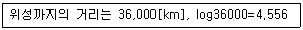
- 약 185.6[dB]
- 약 200.7[dB]
- 약 203.7[dB]
- 약 211.7[dB]
(정답률: 62%)
74. 다음은 태양을 중심으로 회전하는 행성들의 운동을 관측한 결과로 얻어낸 법칙이다. 다음에 해당하는 법칙은 무엇인가?
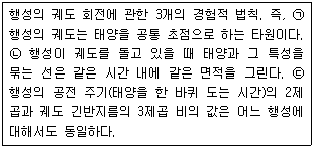
- 케플러 법칙(Kepler's Law)
- 탈보트-플래토의 법칙(Talbot-Plateau's Law)
- 스티븐의 법칙(Steven's Law)
- 스톡스의 법칙(Stoke's Law)
(정답률: 76%)
75. EUREKA-147 전송시스템 파라미터에서 전송모드 I의 부 반송파 수는?
- 384개
- 1,536개
- 192개
- 768개
(정답률: 75%)
76. 지상파 DMB에서 사용하는 QPSK 변조방식은 하나의 부호에 몇 개의 비트가 할당되는가?
- 2
- 4
- 16
- 64
(정답률: 77%)
77. 우리나라 지상파DMB 전송시스템의 오류분산에서 고속정보채널(Fast Information Channel)에 사용하는 방식은 무엇인가?
- 시간인터리빙
- 주파수인터리빙
- 길쌈부호
- CRC
(정답률: 66%)
78. 다음 중 방송시스템 안테나의 접지방법에 대한 설명이 잘못된 것은?
- 심굴 접지방식 : 동판을 지하에 매설하는 방법으로 소전력 공중선에 사용한다.
- 카운터포이즈 접지방식 : 대지의 도전율이 좋은 곳에 사용하며 중전력용이다.
- Redial Earth 접지방식 : 안테나의 기저부에 접지하는 방식으로 중파용 공중선에 사용한다.
- 다중 접지방식 : 접지저항이 약 1~2[Ω]정도이고 대용량 송신기에 사용된다.
(정답률: 48%)
79. 접지 시공 시방서에 의한 한국산업규격(KS)의 표준이 잘못된 것은?
- KS C 2621 동선용 나압착 슬라브
- KS C 3103 전기용 연동연선(AS)
- KS C 3301 600V 비닐 절연전선(IV)
- KS C 0804 접지선 및 접지측 전선의 색별 통칙
(정답률: 67%)
80. 공동시청 안테나 시설의 설비구성 중 공동건물의 설비에 해당되지 않는 것은?
- 안테나
- 방향성 결합기
- 구내증폭기
- 보안기
(정답률: 66%)
5과목: 전자계산기 일반 및 방송설비기준
81. 다음 중 DMA(Direct Memory Access)에 대한 설명으로 틀린 것은?
- 주변장치와 기억장치 등의 대용량 데이터 전송에 적합하다.
- 프로그램방식보다 데이터의 전송속도가 느리다.
- CPU의 개입없이 메모리와 주변장치 사이에서 데이터 전송을 수행한다.
- DMA 전송이 수행되는 동안 CPU는 메모리 버스를 제어하지 못한다.
(정답률: 62%)
82. 다음 중 CPU의 하드웨어(Hardware) 요소들을 기능별로 분류할 경우 포함되지 않는 것은?
- 연산 기능
- 제어 기능
- 입출력 기능
- 전달 기능
(정답률: 58%)
83. 다음의 데이터 코드 중 가중치 코드가 아닌 것은?
- 8421 코드
- 바이퀴너리(Biquinary) 코드
- 그레이(Gray) 코드
- 링 카운터(Ring Couter) 코드
(정답률: 69%)
84. 다음 논리회로에 의해 계산된 결과 X는?
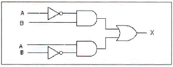
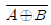
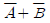
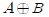
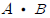
(정답률: 58%)
85. 다음 중 운영체제(Operating System)의 성능을 극대화하기 위한 조건이 아닌 것은?
- 사용 가능도(Availability) 증대
- 신뢰도(Reliability) 향상
- 처리능력(Throughput) 증대
- 응답시간(Turn Around Time) 연장
(정답률: 73%)
86. 다음 내용은 어떤 용어에 대한 설명인가?
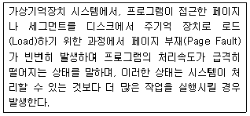
- 오버레이(Overlay)
- 스래싱(Thrashing)
- 데드락(Deadlocks)
- 덤프(Dump)
(정답률: 70%)
87. 다음 내용이 의미하는 소프트웨어는 무엇인가?
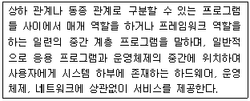
- 유틸리티
- 디바이스 미들웨어
- 응용소프트웨어
- 미들웨어
(정답률: 73%)
88. 다음 프로그램 언어 중 구조적 프로그래밍(Structured Programming)에 적합한 기능과 구조를 갖는 것은?
- BASIC
- FORTRAN
- C
- RPG
(정답률: 78%)
89. 다음 중 마이크로프로세서에 대한 설명으로 틀린 것은?
- 마이크로프로세서는 데이터를 시스템 메모리에 쓰거나 시스템 메모리로부터 읽어 들일 수 있다.
- 마이크로프로세서는 데이터를 입출력장치에 쓰거나 입출력 장치로부터 읽어 들일 수 있다.
- 마이크로프로세서는 시스템 메모리로부터 명령어를 읽어 들일 수 없다.
- 마이크로프로세서는 데이터를 가공할 수 있다.
(정답률: 68%)
90. 16비트 명령어 형식에서 연산코드 5비트, 오퍼랜드1은 3비트, 오퍼랜드2는 8비트일 경우, ⓐ 연산종류와 사용할 수 있는 ⓑ 레지스터의 수를 올바르게 나열한 것은?
- ⓐ 32가지, ⓑ 512
- ⓐ 31가지, ⓑ 8
- ⓐ 32가지, ⓑ 8
- ⓐ 8가지, ⓑ 511
(정답률: 68%)
91. 방송프로그램을 종합유선방송국으로부터 시청자에게 전송하기 위하여 유ㆍ무선 전송ㆍ선로설비를 설치ㆍ운영하는 사업은?
- 전송망사업
- 종합유선방송사업
- 중계유선방송사업
- 음악유선방송사업
(정답률: 64%)
92. 지상파방송사업을 하려는 자는 신청인에 관한 사항을 기재한 서류, 사업계획서, 시설설치계획서를 누구에게 제출하여야 하는가?
- 문화체육관광부장관
- 행정자치부장관
- 미래창조과학부장관
- 고용노동부장관
(정답률: 72%)
93. 다음 중 주전송장치에 대한 설명으로 적합한 것은?
- 유선방송국설비와 전송선로설비를 말한다.
- 유선방송국에서 텔레비전 방송신호를 수신하기 위한 안테나 및 증폭장치 등을 말한다.
- 유선방송신호를 증폭ㆍ조정ㆍ변환 및 혼합하여 선로에 전송하는 장치와 이에 부가된 장치를 말한다.
- 분배기 및 분기기 등에 의한 상ㆍ하향 신호의 전송손실을 보상하기 위하여 사용하는 장치를 말한다.
(정답률: 71%)
94. 외국 인공위성의 무선설비를 이용하여 위성방송을 행하는 사업을 하려는 자는 미래창조과학부장관에게 무엇을 얻어야 하는가?
- 승인
- 추천
- 등록
- 인가
(정답률: 76%)
95. 다음 중 정보통신공사업법에서 말하는 공사의 종류 가운데 방송국설비 공사가 아닌 것은?
- 영상ㆍ음향설비
- 송출설비
- 방송관리시스템설비 등의 공사
- 무선 CATV설비
(정답률: 73%)
96. 무선국의 개설허가의 유효기간은 몇 년 이내의 범위에서 대통령령으로 정하며, 그 기간이 만료된 때에는 재허가 및 재승인을 할 수 있는가?(오류 신고가 접수된 문제입니다. 반드시 정답과 해설을 확인하시기 바랍니다.)
- 2년
- 3년
- 5년
- 7년
(정답률: 31%)
97. 종합유선방송국설비에서 주파수변조방식에 의해 광케이블로 전송하는 경우 분계점은?
- 진폭변조기와 동축케이블의 최초 접속점
- 주파수변조기와 무선송신기의 최초 접속점
- 주파수변조기와 광송신기의 최초 접속점
- 텔레비전 인코더와 광송신기의 최초 접속점
(정답률: 74%)
98. 다음 중 유선방송시설의 설치도면 작성에 필요한 기호 및 약호에서 “인입선”을 나타내는 약호는?
- TL(Trunk Line)
- FL(Feeder Line)
- SL(Subscribe Line)
- DL(Distribution Line)
(정답률: 62%)
99. 종합유선방송 사업자별 시설 중 망사업자(NO) 시설이 아닌 것은?
- 광 송ㆍ수신기
- 분배센타 설비
- 주 전송설비(H/E)
- 망 감시시스템
(정답률: 66%)
100. 다음 중 주파수 분배에 있어서 미래창조과학부장관이 고려할 사항이 아닌 것은?
- 주파수의 이용현황 등 국내의 주파수 이용 여건
- 전파를 이용하는 서비스에 대한 수요
- 국방ㆍ치안 및 조난구조 등 국가안보ㆍ질서유지 또는 인명안전의 필요성
- 국내ㆍ외 주파수 이용확산에 대한 대칙
(정답률: 67%)
교류입력의 반주기 동안, 브리지 정류기의 다이오드 중 두 개는 항상 순방향 바이어스가 되어 전류가 흐르게 된다. 이는 교류입력의 양/음성 주기에 따라 다이오드가 번갈아가며 바이어스가 바뀌기 때문이다. 나머지 두 개의 다이오드는 역방향 바이어스가 되어 전류가 흐르지 않는다. 이렇게 두 개의 다이오드가 항상 순방향 바이어스가 되므로, 교류입력의 반주기에 대한 브리지 정류기의 다이오드 동작조건은 "두 개의 다이오드가 순방향 바이어스이다."가 된다.